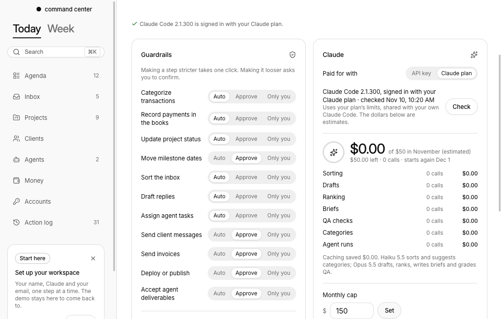

Claude, guardrails and costs
Claude does the reading, sorting and drafting. You decide how it's paid for, how much it may spend, and what it may do without asking.
How Claude is paid for
In Settings › Claude, choose one:
Your API key
Pay as you go, billed by Anthropic. Make a key at platform.claude.com and paste it in. Command Center checks it with Anthropic (free), then keeps it in your system's keychain. It never shows the key again.
Your Claude plan
Uses your Claude subscription through Claude Code. Choose Check:
- Command Center looks everywhere Claude Code gets installed, on a Mac and on Windows: its own installer's folder, Homebrew, WinGet, Scoop, npm, every folder on your PATH, and the copy inside the Claude desktop app.
- If it finds none, install Claude Code from claude.ai/install.
- If it isn't signed in yet, Check tells you exactly what to type in a terminal. Sign in there once with your Claude account, then choose Check again.
It shares your plan's limits with your own Claude Code use. Command Center never reads or keeps Claude Code's sign-in; it only runs it, with every tool off.

The monthly cap
The most Claude may use in a month, $50 to start. Settings shows this month's use by job, the calls and what caching saved. At the cap Claude pauses until the 1st, and nothing else stops: the free rules keep sorting and the touchpoints keep landing. Lowering the cap is instant; raising it asks you to confirm. Each call reserves its worst case before it runs, so the cap can't be overshot.
What Claude does
| Job | Model | Only while |
|---|---|---|
| Sorting new mail | Haiku | Claude sorts new mail is on |
| Drafting replies | Opus | Claude drafts replies is on |
| Writing the briefs | Opus | Claude writes the briefs is on |
| Suggesting categories | Haiku | Claude suggests categories is on |
| QA grading of site agents' work | Opus | A run reaches QA |
Claude only ever proposes. It never gets a tool that sends, pays or signs, never picks a recipient or an amount (those come from your data), and its words go out only through a card you approve.
Guardrails
For each kind of work, Settings › Claude › Guardrails sets whether it may happen on its own (Auto), must ask you (Approve), or is only prepared for you to do (Only you).
- Making a step stricter takes one click. Making it looser asks you to confirm.
- Anything that sends, publishes or speaks for you (client messages, invoices, deploying a site) is always at least Approve.
- Four things are always yours: entering card or bank details, moving money, signing contracts and setting pricing. Claude can prepare them as a card with a checklist; it never does them.

The spend limit
Separate from Claude's cap: the most Command Center may commit of your money to others on its own. It starts at $0, so anything that costs money waits for your click.
The action log
Everything Claude, the engine and you did lands in the action log, with its source and Undo where it can have one. See The action log.
What it costs
- Command Center: free.
- Claude: paid by your API key or your plan, only for what you turn on, under your monthly cap. As a rough guide, a busy inbox of about 200 messages and 20 replies a day costs about $1 to $1.50 a day, most of it drafts. The free rules file a good share before Claude sees anything.
- Site agents: each run has a budget you set ($5 to start), held against Claude's cap. A run only starts when you confirm its brief and its cost.
- Everything else is free: Google Cloud, the Slack app, Intuit's developer app, Stripe's restricted key, Notion's connection, GitHub tokens and ntfy.